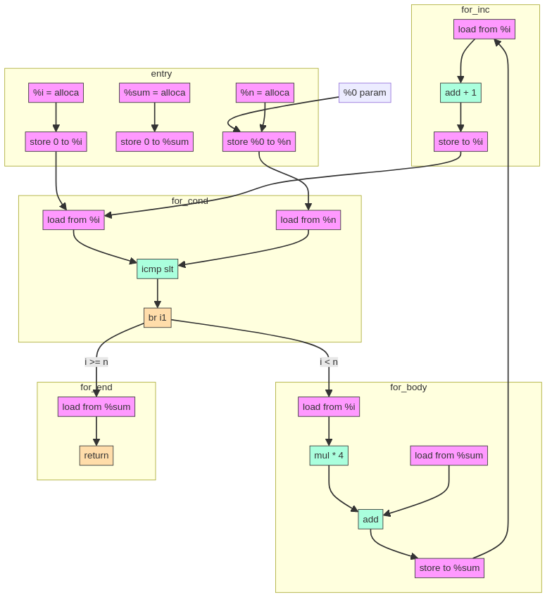
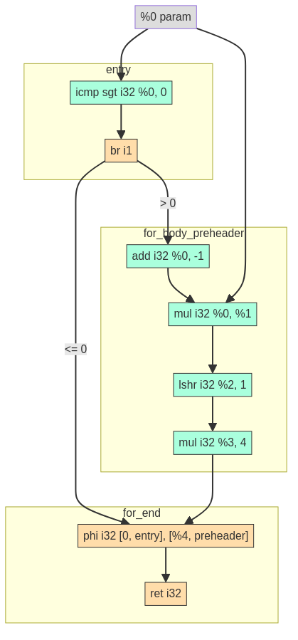

Parsing Gigabytes of JSON per Second
Wong Ding Feng
Created: 2025-02-03 Mon 00:17
Table of Contents
1. Objectives
- Describe the real problem with JSON
- Techniques and strategies to make it fast
- Simple primer on bitwise operations and simd
- simdjson architecture
- How this is used to make simdjson
2. Problem
2.1. How fast is your hardware
CPU: AMD Eng Sample: 100-000000534-40_Y: 4.6 GHz Network: 1Gb~100MB/s, 10Gb~1000MB/s
One core can read direct text at this speed:
Testing dd read: 1280+0 records in 1280+0 records out 10737418240 bytes (11 GB, 10 GiB) copied, 3.88076 s, 2.8 GB/s
2.2. Why is json interesting?
- most data is in json
- basically double the speed means you can parse 2x as much data
- duplicating hardware for free
| parser | Skylake | Cannon Lake | speed |
|---|---|---|---|
| simdjson | 1.4 | 1.3 | fast |
| RapidJSON | 0.56 | 0.44 | slow |
| sajson | 0.93 | 0.84 | normal |
2.3. Why you should be interested
- configurable, increase speed

2.4. Against others

2.5. On demand json

3. Ideas on how to do it fast?
3.1. strategies
- depends on the usage pattern
3.1.1. Query intensive
- Create a database (ElasticSearch, MongoDB, PostgresSQL)
- create a KV store
- load once and query it
3.1.2. Selective parsing
- Selective parsing
- NoDB
- query the data without parsing it, without loading into a DB
- like grep
- JIT techniques
- find patterns and repetitive structures, compile the code for the specific query
- like a compiler
- Mison (by Microsoft)
- selective parsing, jump directly to the field you want
- use SIMD to find structural important characters like "
- NoDB
3.2. What is fair game?
- Types of json parsing
- Non-validating json parser
- assume the input is valid
- easier
- most selective parsing is non-validating
- Validating json parser
- check the input is valid
- no assumptions or malformed input
- security risk
- its just wrong number or string being parsed
- harder more complex
- Non-validating json parser
3.3. Proper definition of JSON
/* JSON EBNF Grammar Specification */ /* Root JSON structure */ json = ws , (object | array) , ws ; /* Objects */ object = "{" , ws , [ members ] , ws , "}" ; members = pair , { "," , ws , pair } ; pair = string , ws , ":" , ws , value ; /* Arrays */ array = "[" , ws , [ elements ] , ws , "]" ; elements = value , { "," , ws , value } ; /* Values */ value = string | number | object | array | "true" | "false" | "null" ; /* Strings */ string = '"' , { char | escape } , '"' ; char = ? any Unicode character except " or \ or control characters ? ; escape = "\" , ('"' | "\" | "/" | "b" | "f" | "n" | "r" | "t" | unicode) ; unicode = "u" , hexdigit , hexdigit , hexdigit , hexdigit ; hexdigit = digit | "A" | "B" | "C" | "D" | "E" | "F" | "a" | "b" | "c" | "d" | "e" | "f" ; /* Numbers */ number = [ "-" ] , (zero | integer) , [ fraction ] , [ exponent ] ; integer = nonzero , { digit } ; nonzero = "1" | "2" | "3" | "4" | "5" | "6" | "7" | "8" | "9" ; digit = "0" | nonzero ; zero = "0" ; fraction = "." , digit , { digit } ; exponent = ("E" | "e") , [ "+" | "-" ] , digit , { digit } ; /* Whitespace */ ws = { whitespace } ; whitespace = " " | "\t" | "\n" | "\r" ; /* Comments and Explanation */
3.4. My reduced definition of JSON
json_value ::= primitive_value | container_value primitive_value ::= boolean | string | number | null boolean ::= "true" | "false" string ::= " utf8_char* " utf8_char ::= ascii_char | unicode_char number ::= integer | decimal | scientific integer ::= ["+" | "-"] digit+ decimal ::= integer "." digit+ scientific ::= decimal "e" ["+"|"-"] digit+ digit ::= 0 | 1 | 2 | 3 | 4 | 5 | 6 | 7 | 8 | 9 null ::= "null" container_value ::= object | array object ::= "{" string:json_value, string:json_value "}" array ::= "[" json_value, json_value "]" (* Notes: - Integer limits: [-2^53+1 to 2^53-1] for safe integers - Scientific notation limit: approximately ±2^1024 - NaN and Infinity are not valid JSON numbers - Strings must be UTF-8 encoded *)
3.5. Strongly define: bool, string, number, null, object and array
data JsonValue = Primitive PrimitiveValue | Container ContainerValue -- 6 primitives -------------------------- data PrimitiveValue = Boolean Bool | String Text | Number Double | Null data ContainerValue = Object Object | Array Array -- END ----------------------------------- newtype Object = Object [(Text, JsonValue)] newtype Array = Array [JsonValue]
3.6. Strongly define: bool, string, number, null, object and array
3.6.1. Number limits and Integers
// 1. Integer Limits const INTEGER_EXAMPLES = { // Maximum safe integer in JavaScript (2^53 - 1) max_safe_integer: 9007199254740991, // Minimum safe integer in JavaScript (-(2^53 - 1)) min_safe_integer: -9007199254740991, // Zero representations zero: 0, negative_zero: -0, // JSON preserves negative zero // Common boundary values max_32bit_int: 2147483647, min_32bit_int: -2147483648, // Integer examples positive: 42, negative: -42 };
3.6.2. Floats and Scientific notation
// 2. Floating Point Examples const FLOAT_EXAMPLES = { // Precision examples (up to 15-17 significant digits) high_precision: 1.234567890123456, // Edge cases very_small_positive: 2.2250738585072014e-308, // Near smallest possible double very_large_positive: 1.7976931348623157e+308 // Near largest possible double }; // 3. Scientific Notation Examples const SCIENTIFIC_NOTATION = { // Positive exponents large_scientific: 1.23e+11, very_large: 1.23E+308, // Note: Both 'e' and 'E' are valid // Negative exponents small_scientific: 1.23e-11, very_small: 1.23E-308, // Zero with exponent zero_scientific: 0.0e0, // Various representations alternative_forms: { standard: 1230000000, scientific: 1.23e9, another_form: 123e7 } };
3.7. String: handle escaped quotes and UTF-8
- some lazy parsers assume ascii for simplicity
- 128 possibilities, 8 bits only
- assume that input does not have japanese or chinese or weird characters
- RFC standard says strings are UTF-8
- escaped double quotes “Tom said: \”hello\“.”
- Tom said: “hello”.
- number of ’\’
- odd -> escaped, “\”“ -> ”
- even -> not escaped, “\\” -> \
- outside of ",there can only be 4 types of white space
- “ ” | “\t” | “\r” | “\n”
3.7.1. ASCII code
- code ponits 0x00 - 0xEF 127 possibilities

3.7.2. UTF-8
Single byte (ASCII): 0xxxxxxx (values 0-127) Values start with 0, remaining 7 bits for data Two bytes: 110xxxxx 10xxxxxx (values 128-2047) First byte starts with 110 Three bytes: 1110xxxx 10xxxxxx 10xxxxxx (values 2048-65535) First byte starts with 1110 Four bytes: 11110xxx 10xxxxxx 10xxxxxx 10xxxxxx (values 65536+) First byte starts with 11110
- normally outside of strings, no bytes start with 1 in front.
3.8. Summary of requirements
- numbers
- negative
- floats
- string
- utf-8
- escaped quotes \"
- Rest of structure well formed
- valid whitespace
- valid bracket {}, []
4. challenges
4.1. writing a parser for it
- Recursive Descent type parser
- Many if else required, is it possible to do it without any branches?
def peek_token_type(json_str, index): char = json_str[index] # Skip whitespace while index < len(json_str) and is_whitespace(char): index += 1 char = json_str[index] # Check data type based on first character if char == '{': return 'object' elif char == '[': return 'array' elif char == '"': return 'string' elif is_digit(char): return 'number' elif char == 't' or char == 'f': return 'boolean' elif char == 'n': return 'null' else: raise ValueError(f"Invalid JSON character at position {index}: {char}")
4.2. Given the challenge, how to do it fast?
- Parallelization, split work across multiple cores.
- SIMD, process more than 8 bytes at a time.
- Branchless code, no if statements. CPU missed branch prediction.
- correct, 0-1 cycles
- branch miss, 20 cycles
- Branchless code, no if statements. CPU missed branch prediction.
5. About SIMD
how does simd fit into all of this?
5.1. What is simd

5.2. SIMD example
Adding 4 numbers simultaneously: Scalar: A: [5] + [3] = [8] Step 1 B: [7] + [2] = [9] Step 2 C: [4] + [6] = [10] Step 3 D: [1] + [8] = [9] Step 4 SIMD: [5|7|4|1] + [3|2|6|8] = Step 1 [8|9|10|9] Done!
5.3. CPU
Year: 2010 2013 2019
Architecture: Westmere -> Haswell -> Ice Lake
Process: 32nm 22nm 10nm
Vector ISA: SSE2 -> AVX2 -> AVX512
Vec Width: 128-bit 256-bit 512-bit
(16 bytes) (32 bytes) (64 bytes)
- Streaming SIMD Extensions
- XMM0-XMM15
- Advanced Vector Extensions 2
- YMM0-YMM15
- Advanced Vector Extensions 512
- ZMM0-ZMM15
5.4. SIMD code is not that scary
Westmere uses 128-bit SSE instructions (_mm_shuffle_epi8) Haswell uses 256-bit AVX2 instructions (_mm256_shuffle_epi8) Ice Lake uses 512-bit AVX-512 instructions (_mm512_shuffle_epi8)
// Westmere const uint64_t whitespace = in.eq({ _mm_shuffle_epi8(whitespace_table, in.chunks[0]), _mm_shuffle_epi8(whitespace_table, in.chunks[1]), _mm_shuffle_epi8(whitespace_table, in.chunks[2]), _mm_shuffle_epi8(whitespace_table, in.chunks[3]) }); // Haswell (2 x 256-bit chunks) const uint64_t whitespace = in.eq({ _mm256_shuffle_epi8(whitespace_table, in.chunks[0]), _mm256_shuffle_epi8(whitespace_table, in.chunks[1]) }); // Ice Lake (1 x 512-bit chunk) const uint64_t whitespace = in.eq({ _mm512_shuffle_epi8(whitespace_table, in.chunks[0]) });
5.5. When SIMD Shines
- Regular, predictable data patterns
- Simple mathematical operations
- Continuous blocks of memory
- Identical operations on multiple data points
- High throughput
Perfect for SIMD: [1|2|3|4] × 2 = [2 |4 |6 |8 ] ✓ [R|G|B|A] + 10 = [R'|G'|B'|A'] ✓
5.6. SIMD’s Achilles Heel: Branching
- if logic is complex like in parsing unable to do simd
if (char_at == '{') { return "object"; } else if (char_at == '[') { return "array"; } else if (char_at == '"') { return "string"; } else if (is_digit(char_at)) { return "number"; } else if (char_at == 't' || char_at == 'f') { return "boolean"; } else if (char_at == 'n') { return "null"; } else { throw std::invalid_argument( "Invalid JSON character at position " + std::to_string(index) + ": " + char_at ); }
5.6.1. Arithmetic booleans
- actually LLVM does this for you when you do -o2 and -o3
// Example 1: Arithmetic with booleans bool condition = true; int a = 10; int b = 20; // Branched version int x; if (condition) { x = a; } else { x = b; } std::cout << x << std::endl; // Output: 10 // Branchless version 1 x = condition * a + (!condition) * b; // Step by step: // true * 10 + (!true) * 20 // 1 * 10 + 0 * 20 // 10 + 0 = 10 std::cout << x << std::endl; // Output: 10 // Branchless version 2 x = b + (a - b) * condition; // Step by step: // 20 + (10 - 20) * true // 20 + (-10) * 1 // 20 - 10 = 10 std::cout << x << std::endl; // Output: 10
5.6.2. Selection indexing
- actually LLVM does this for you when you do -o2 and -o3
// Example 2: Tuple indexing bool condition = true; int a = 10; int b = 20; // Branched version int x; if (condition) { x = a; } else { x = b; } std::cout << x << std::endl; // Output: 10 // Branchless version std::array<int, 2> values = {b, a}; // Note: array order is {b, a} to match Python's (b, a) x = values[condition]; // Step by step: // {20, 10}[true] // {20, 10}[1] // true converts to 1 // 10 std::cout << x << std::endl; // Output: 10 return 0;
5.6.3. If LLVM does it for you, whats the point?
- LLVM does it’s best, but it cannot find everything
- good at small cases
- some larger complex patterns
- human pattern recognition
- batching operations you can use simd
5.7. Write branchless code (bitwise operations)
5.7.1. Tricky memory layout
number = 305,419,896
number << 1 # shift left logical
Number: 305,419,896
Hex: 0x12345678
Physical Memory Layout (lowest bit → highest bit)
Addr Low Addr High
0x1200 0x1203
| |
v v
Before: 00011110 01101010 00110100 00010010
↓↓↓↓↓ ↓↓↓↓↓ ↓↓↓↓↓ ↓↓↓↓↓
After: 00001111 00110101 00010110 00100100
↑
0 enters
Decimal: 610,839,792
Hexadecimal: 0x2468ACF0
5.7.2. Masking
a = 00001111 b = 11111100 and_op = a & b and_op = 00001100 or_op = a | b or_op = 11111111 xor_or = a ^ b xor_or = 11110011
5.7.3. Unset right most bit(blsr)
s = s & (s-1) a = 00101100 b = (a - 1) a = 00101100 b = 00101011 a & b = 00101000 // rightmost bit is unset
- common cpu operation, compiler optimize to
blsr
5.8. LLVM Compiler

5.8.1. LLVM
Frontend Middle-end Backend
↓ ↓ ↙ ↘
Source Code → LLVM IR → [Optimized IR] → [Assembly] → Machine Code
↘________________↗
(direct path option)
5.8.2. Without LLVM IR
Without LLVM IR (n*m: 3 languages × 3 targets = 9 compilers)
---------------------------------------------------------
C++ ----→ x86_64
\---→ AMD
\--→ ARM
Rust ----→ x86_64
\---→ AMD
\--→ ARM
Haskell --→ x86_64
\-→ AMD
\→ ARM
Each arrow represents a separate compiler frontend+backend (9 total)
5.8.3. With LLVM IR
With LLVM IR (n+m: 3 frontends + 3 backends = 6 components)
--------------------------------------------------------
╭→ x86_64
C++ ╮ │
↓ │
Rust ━━→ IR ━━→ AMD
↑ │
Haskell╯ │
╰→ ARM
┊
↓
Shared Optimizations
- Dead code elimination
- Loop vectorization
- Constant propagation
- And many more...
5.8.4. Intermediate Representation Example(IR)
int example2(int n) { int sum = 0; for (int i = 0; i < n; i++) { sum += i * 4; // Multiplication in loop } return sum; }
5.8.5. Unoptimized IR -O0
define dso_local i32 @_Z8example2i(i32 %0) { entry: %n = alloca i32, align 4 %sum = alloca i32, align 4 %i = alloca i32, align 4 store i32 %0, ptr %n, align 4 store i32 0, ptr %sum, align 4 store i32 0, ptr %i, align 4 br label %for.cond for.cond: %1 = load i32, ptr %i, align 4 %2 = load i32, ptr %n, align 4 %cmp = icmp slt i32 %1, %2 br i1 %cmp, label %for.body, label %for.end for.body: %3 = load i32, ptr %i, align 4 %mul = mul nsw i32 %3, 4 %4 = load i32, ptr %sum, align 4 %add = add nsw i32 %4, %mul store i32 %add, ptr %sum, align 4 br label %for.inc for.inc: %5 = load i32, ptr %i, align 4 %inc = add nsw i32 %5, 1 store i32 %inc, ptr %i, align 4 br label %for.cond for.end: %6 = load i32, ptr %sum, align 4 ret i32 %6 }
5.8.6. Unoptimized IR -O0 Graph

5.8.7. Optimized IR -O2
define dso_local i32 @_Z8example2i(i32 %0) local_unnamed_addr #0 { entry: %cmp6 = icmp sgt i32 %0, 0 br i1 %cmp6, label %for.body.preheader, label %for.end for.body.preheader: %1 = add i32 %0, -1 %2 = mul i32 %0, %1 %3 = lshr i32 %2, 1 %4 = mul i32 %3, 4 br label %for.end for.end: %sum.0.lcssa = phi i32 [ 0, %entry ], [ %4, %for.body.preheader ] ret i32 %sum.0.lcssa }
5.8.8. Optimized IR -O2 Graph

6. Simdjson Implementation
6.1. simdjson Architecture Overview
- Stage 1: Structural Index Creation (find location of important markers)
- Find structural characters ({,},[,],",,:)
- Identify string boundaries
- Locate whitespace
- Validate UTF-8 encoding
- Detect pseudo-structural characters
- Stage 2: Parsing & Tape Building
- Parse atomic values (strings, numbers, true/false/null)
- Validate document structure
- Build navigable tape representation
- Convert numbers to machine formats
- Normalize strings to UTF-8
6.2. simdjson diagram
JSON INPUT STRING
"{"name": "value"}"
⬇
64-BYTE CHUNKS
╔═════════════════╗
║"{"name": "val...║
╚═════════════════╝
⬇
STAGE 1
(Bitmap Generation & find: ([, {, ], }, :, ,)
Index Extraction) escaped characters and quoted regions
⬇ Validate UTF-8
INDEX ARRAY
[0,3,5,7,...]
⬇
STAGE 2 parse number, int, float, 1e10, true, false, null, string
(Parse & Build Tape) build tape to navigate
⬇
FINAL TAPE
[root, {, "name", "value", }]
6.3. Stage 1: Structural and Pseudo Structural Index Construction
6.3.1. Input and Output
- Input: Raw JSON bytes
- Output:
- Bitmask of structural chars
- Array of integer indices marking structural elements
6.3.2. Key Responsibilities
- Character encoding validation (UTF-8)
- Locate structural characters ([, {, ], }, :, ,)
- Identify string boundaries
- Handles escaped characters and quoted regions
- Find pseudo-structural characters (atoms like numbers, true, false, null)
6.4. Stage 2: Structured Navigation
6.4.1. Input and Output
- Input: Array of structural indices from Stage 1
- Output: Parsed JSON structure on a “tape”(array)
- Purpose: Build navigable representation of JSON document
6.4.2. Key Responsibilities
- Parse strings and convert to UTF-8
- Convert numbers to 64-bit integers or doubles
- Validate structural rules (matching braces, proper sequences)
- Build navigable tape structure
6.4.3. The Tape Format
- 64-bit words for each node
- Special encoding for different types:
- Atoms (null, true, false): n/t/f × 2^56
- Numbers: Two 64-bit words
- Arrays/Objects: Start/end markers with navigation pointers
- Strings: Pointer to string buffer
7. Stage 1: Structural and Pseudo Structural Index Construction
const auto whitespace_table = simd8<uint8_t>::repeat_16(' ', 100, 100, 100, 17, 100, 113, 2, 100, '\t', '\n', 112, 100, '\r', 100, 100); const auto op_table = simd8<uint8_t>::repeat_16( 0, 0, 0, 0, 0, 0, 0, 0, 0, 0, ':', '{', // : = 3A, [ = 5B, { = 7B ',', '}', 0, 0 // , = 2C, ] = 5D, } = 7D ); const uint64_t whitespace = in.eq({ _mm256_shuffle_epi8(whitespace_table, in.chunks[0]), _mm256_shuffle_epi8(whitespace_table, in.chunks[1]) }); // Turn [ and ] into { and } const simd8x64<uint8_t> curlified{ in.chunks[0] | 0x20, in.chunks[1] | 0x20 }; const uint64_t op = curlified.eq({ _mm256_shuffle_epi8(op_table, in.chunks[0]), _mm256_shuffle_epi8(op_table, in.chunks[1]) }); return { whitespace, op };
7.1. Stage 1: 1 Vectorized Classification and Pseudo-Structural Characters
- Want to obtain location of structural characters ({, }, [, ], :, ,)
- pseudo-structural - Any non‐whitespace character that immediately follows a structural character or whitespace
- useful for parsing, we need this bit mask to build tape
{ "\\\"Nam[{": [ 116,"\\\\" , 234, "true", false ], "t":"\\\"" }
__1______________1___1________1____1_______1________1___1_______
7.1.1. Vectorized Classification
| code points | character | desired value | bin |
|---|---|---|---|
| 0x2c | `,` (comma) | 1 | 00001 |
| 0x3a | `:` (colon) | 2 | 00010 |
| 0x5b | `[` | 4 | 00100 |
| 0x5d | `]` | 4 | 00100 |
| 0x7b | `{` | 4 | 00100 |
| 0x7d | `}` | 4 | 00100 |
| 0x09 | TAB | 8 | 01000 |
| 0x0a | LF | 8 | 01000 |
| 0x0d | CR | 8 | 01000 |
| 0x20 | SPACE | 16 | 10000 |
| others | any other | 0 | 00000 |
- PMOVMSKB
- _mm256_movemask_epi8 to extract the bits into bitmap
- VPSHUFB: Vector Permute Shuffle Bytes
- basically a one instruction lookup table using the 4 lowest bit(nibble)
- 0000 XXXX
int main() { // Lookup table for hex digits "0123456789abcdef" __m256i lut = _mm256_setr_epi8( '0', '1', '2', '3', '4', '5', '6', '7', '8', '9', 'a', 'b', 'c', 'd', 'e', 'f', '0', '1', '2', '3', '4', '5', '6', '7', '8', '9', 'a', 'b', 'c', 'd', 'e', 'f' ); // Example 2: Alternating normal/zeroed values (0x00,0x80,0x01,0x81...) __m256i indices2 = _mm256_setr_epi8( 0x00, 0x80, 0x01, 0x81, 0x02, 0x82, 0x03, 0x83, 0x04, 0x84, 0x05, 0x85, 0x06, 0x86, 0x07, 0x87, 0x08, 0x88, 0x09, 0x89, 0x0A, 0x8A, 0x0B, 0x8B, 0x0C, 0x8C, 0x0D, 0x8D, 0x0E, 0x8E, 0x0F, 0x8F ); printf("\nAlternating with zeroes (. represents zero):\n"); print_bytes(_mm256_shuffle_epi8(lut, indices2)); // Alternating with zeroes (. represents zero): // 0.1.2.3.4.5.6.7.8.9.a.b.c.d.e.f. return 0; } #pragma GCC target("avx2") #include <immintrin.h> #include <stdio.h> void print_bytes(__m256i v) { unsigned char bytes[32]; _mm256_storeu_si256((__m256i*)bytes, v); for(int i = 0; i < 32; i++) { if (bytes[i]) { printf("%c", bytes[i]); } else { printf("."); // Print dot for zero bytes } } printf("\n"); }
- basically a one instruction lookup table using the 4 lowest bit(nibble)
- Simple example
code points character desired value bin 0x3a `:` (colon) 2 00010 0x0a LF 8 01000 - use vpshufb to match low nibble a
- could be both : and LF so it must match 0010 | 1000 = 1010
- low nibble at position A = 10
- high nibble 0x3 vs 0x0
- 0x3 = 2
- 0x0 = 8
- high nibble 0x3 vs 0x0
- Simple example
"LF:" Low nibble table 00 01 02 03 04 05 06 07 08 09 10 11 12 13 14 15 xx xx xx xx xx xx xx xx xx xx 10 xx xx xx xx xx 1010 high nibble table 00 .. 02 03 04 05 06 07 08 09 10 11 12 13 14 15 08 .. 02 xx xx xx xx xx xx xx xx xx xx xx xx xx 0100, 0010
- Simple example
LF : low 1010 1010 high 1000 0010 AND 1000 0010 8 2
7.1.2. Stage 1: Bitmap to Array index
- input data
{ “\\\”Nam[{“: [ 116,”\\\\“ , 234, ”true“, false ], ”t“:”\\\“” }: input data 1_________1________1____1________1____1___________1_1_1____1: Q 1_________11_1_1____1_______1____1_______1_______11____1_______1: S 1____________1_1__________1_1____1_______1_____1__1__________1: W
- take Q for example, we want to convert Q’s bit mask into a list of indexes
- [2, 12, 22, 27, 37, 42, 54, 56, 58, 62]
- take Q for example, we want to convert Q’s bit mask into a list of indexes
- extraction
- 2 instructions
- tzcnt count trailing least significant 0 bits
- blsr which delete the last bit.
a = 1010000 idx = tzcnt(a) // 4 a = blsr(a) // 1000000 idx = tzcnt(a) // 6
- Naive Implementation
void extract_set_bits_unoptimized(uint64_t bitset, uint32_t* output) { uint32_t pos = 0; // This while loop is the source of unpredictable branches while (bitset) { // Find position of lowest set bit uint32_t bit_pos = __builtin_ctzll(bitset); // Store the position *output++ = bit_pos; // Clear the lowest set bit bitset &= (bitset - 1); } }
- Minimal branching implementation
void extract_set_bits_optimized(uint64_t bitset, uint32_t* output) { // Get total number of set bits uint32_t count = __builtin_popcountll(bitset); uint32_t* next_base = output + count; // Process 8 bits at a time unconditionally while (bitset) { // Extract next 8 set bit positions, even if we don't have 8 bits *output++ = __builtin_ctzll(bitset); bitset &= (bitset - 1); // Clear lowest set bit (blsr instruction) *output++ = __builtin_ctzll(bitset); bitset &= (bitset - 1); *output++ = __builtin_ctzll(bitset); bitset &= (bitset - 1); *output++ = __builtin_ctzll(bitset); bitset &= (bitset - 1); *output++ = __builtin_ctzll(bitset); bitset &= (bitset - 1); *output++ = __builtin_ctzll(bitset); bitset &= (bitset - 1); *output++ = __builtin_ctzll(bitset); bitset &= (bitset - 1); *output++ = __builtin_ctzll(bitset); bitset &= (bitset - 1); } // Reset output pointer to actual end based on real count output = next_base; }
7.2. Stage 1: 2 Eliminated escaped or quoted substring
7.2.1. Get backslash
{ "\\\"Nam[{": [ 116,"\\\\" , 234, "true", false ], "t":"\\\"" }: input data
___111________________1111_______________________________111____: B = backslash_bits
____111_________________1111______________________________111___: bits_shifted_left = backslash_bits << 1
___111________________1111_______________________________111____: bits
____000_________________0000______________________________000___: inverted = ~bits_shifted_left
___1__________________1__________________________________1______: S = starts = bits & inverted
// we get the first backslash of every group
7.2.2. Get odd length sequences starting on an odd offset
_1_1_1_1_1_1_1_1_1_1_1_1_1_1_1_1_1_1_1_1_1_1_1_1_1_1_1_1_1_1_1_1: O (constant) ___111________________1111_______________________________111____: B = backslash_bits ___1__________________1__________________________________1______: S = starts = bits & inverted _1_1_1_1_1_1_1_1_1_1_1_1_1_1_1_1_1_1_1_1_1_1_1_1_1_1_1_1_1_1_1_1: O (constant) ___1_____________________________________________________1______: OS = S & O // add B to OS, yielding carries on backslash sequences with odd starts ___1_____________________________________________________1______: OS = S & O ___111________________1111_______________________________111____: B = backslash_bits --> --> ______1_______________1111__________________________________1___: OC = B + OS // filter out the backslashes from the previous addition, getting carries only ___111________________1111_______________________________111____: B = backslash_bits ___000________________0000_______________________________000____: ~B ______1_______________1111__________________________________1___: OC = B + OS ______1_____________________________________________________1___: OCO = OC & ~B // get the odd-length sequence starting on an odd offset and ending on even offset ______1_____________________________________________________1___: OCO = OC & ~B 1_1_1_1_1_1_1_1_1_1_1_1_1_1_1_1_1_1_1_1_1_1_1_1_1_1_1_1_1_1_1_1: E (constant) ______1_____________________________________________________1___: OD2 = OCO & E // this shows two odd-length sequence starting on an odd offset
7.2.3. Get odd length sequences starting on an even offset
its just the reverse of what we done just now
{ "\\\"Nam[{": [ 116,"\\\\" , 234, "true", false ], "t":"\\\"" }: input data
1_1_1_1_1_1_1_1_1_1_1_1_1_1_1_1_1_1_1_1_1_1_1_1_1_1_1_1_1_1_1_1_: E (constant)
___1__________________1__________________________________1______: S = starts = bits & inverted
______________________1_________________________________________: ES = S & E
___111________________1111_______________________________111____: B = backslash_bits
// add B to ES, yielding carries on backslash sequences with even starts
--->
___111____________________1______________________________111____: EC = B + ES
// filter out the backslashes from the previous addition, getting carries only
__________________________1_____________________________________: ECE = EC & ~B
// select only the end of sequences ending on an odd offset
__________________________1_____________________________________: ECE = EC & ~B
_1_1_1_1_1_1_1_1_1_1_1_1_1_1_1_1_1_1_1_1_1_1_1_1_1_1_1_1_1_1_1_1: O (constant)
________________________________________________________________: OD1 = ECE & ~E
// there are no odd-length sequences of backslashes starting on an even offset
7.2.4. Get sequences with odd offset
// merge results, yielding ends of all odd-length sequence of backslashes
________________________________________________________________: OD1 = ECE & ~E
______1_____________________________________________________1___: OD2 = OCO & E
______1_____________________________________________________1___: OD = OD1 | OD2
{ "\\\"Nam[{": [ 116,"\\\\" , 234, "true", false ], "t":"\\\"" }: input data
// these " are escaped and thus are counted as text instead of structural characters
7.2.5. Eliminated escape
{ "\\\"Nam[{": [ 116,"\\\\" , 234, "true", false ], "t":"\\\"" }: input data
__1___1_____1________1____1________1____1___________1_1_1___11__: Q = quotes
______1_____________________________________________________1___: OD
// we remove the escaped " quotes
__1_________1________1____1________1____1___________1_1_1____1__: Q &= ~OD
__1111111111_________11111_________11111____________11__11111___: CLMUL(Q,~0)
7.2.6. Sweeping
uint64_t xorShiftOperations(uint64_t num, bool rightShift, bool tutorial = false) { // Array of shift amounts int shifts[] = {1, 2, 4, 8, 16, 32}; uint64_t result = num; for (int shift : shifts) { result ^= (result << shift); } // 0000000000000000000010000000000000000000000000000000000000000000 // after apply // 0000000000000000000011111111111111111111111111111111111111111111 // 0001000000000000000000000000000000000000000000000000000000000000 // after apply // 0001111111111111111111111111111111111111111111111111111111111111 return result; }
7.2.7. Sweeping
// 0000000000000000000010000000000000000000000000000000000000000000 // OR // 0001000000000000000000000000000000000000000000000000000000000000 // result // 0001000000000000000010000000000000000000000000000000000000000000 // 0000000000000000000011111111111111111111111111111111111111111111 // XOR // 0001111111111111111111111111111111111111111111111111111111111111 // result // 0001111111111111111100000000000000000000000000000000000000000000
7.2.8. Sweeping
Testing left shift: Initial number: 0x00 00100000 00001000 00000100 00100000 00010000 10000000 00001010 10000100 0x07 After left shift by 1: 0x00 00110000 00001100 00000110 00110000 00011000 11000000 00001111 11000110 0x07 After left shift by 2: 0x00 00111100 00001111 00000111 10111100 00011110 11110000 00001100 00110111 0x07 After left shift by 4: 0x00 00111111 11001111 11110111 11000111 11011111 00011111 00001100 11110100 0x07 After left shift by 8: 0x00 00111111 11110000 00111000 00110000 00011000 11000000 00010011 11111000 0x07 After left shift by 16: 0x00 00111111 11110000 00000111 11000000 00100000 11110000 00001011 00111000 0x07 After left shift by 32: 0x00 00111111 11110000 00000111 11000000 00011111 00000000 00001100 11111000 0x07
7.2.9. Sweeping implemented by CLMUL, pclmulqdq
- Carry Less Multiply
- CLMUL(4, 20)
- 4 * 20
4
X 20
----------
4
X (16 + 4)
----------
16
+ 64
----------
80
----------
7.2.10. Sweeping implemented by CLMUL, pclmulqdq
- CLMUL(4, 20)
- XOR ~= ADD
00100 (4)
X 10100 (20)
-------------
00100__ (X4 means 4 << 2)
XOR 00100____ (X16 means 4 << 4)
-------------
00101 (all XORed together)
-------------
7.2.11. Sweeping implemented by CLMUL, pclmulqdq
- CLMUL(inputJsonBitmask, EvenBitMask)
int shifts[] = {1, 2, 4, 8, 16, 32}; uint64_t result = num; for (int shift : shifts) { result ^= (result << shift); } // 01010101 01010101 01010101 01010101 // input // XOR (input << 1) // XOR (input << 2) // XOR (input << 4) // XOR (input << 8) // XOR (input << 16) // XOR (input << 32) // ---------------- // quote mask // ----------------
7.2.12. finally get quote mask
{ "\\\"Nam[{": [ 116,"\\\\" , 234, "true", false ], "t":"\\\"" }: input data
__1111111111_________11111_________11111____________11__11111___: CLMUL(Q,~0)
7.3. Stage 1: 3 Character-Encoding Validation
- Initial ASCII Fast Path, first bit == 0
- Main algorithm
- Range check(0xF4 saturated subtract)
- Continuation Byte validation
7.3.1. Check for Ascii fast path
Single byte (ASCII): 0xxxxxxx (values 0-127) Values start with 0, remaining 7 bits for data
7.3.2. Continuation Byte validation
Single byte (ASCII): 0xxxxxxx (values 0-127) Values start with 0, remaining 7 bits for data Two bytes: 110xxxxx 10xxxxxx (values 128-2047) First byte starts with 110 Three bytes: 1110xxxx 10xxxxxx 10xxxxxx (values 2048-65535) First byte starts with 1110 Four bytes: 1111xxxx 10xxxxxx 10xxxxxx 10xxxxxx (values 65536+) First byte starts with 11110
- map to values
high Dec high Dec 0000 1 1000 0 0001 1 1001 0 0010 1 1010 0 0011 1 1011 0 0100 1 1100 2 0101 1 1101 2 0110 1 1110 3 0111 1 1111 4 1111xxxx 10xxxxxx 10xxxxxx 10xxxxxx (values 65536+) 4 0 0 0 1110xxxx 10xxxxxx 10xxxxxx (values 2048-65535) 3 0 0
- SIMD validation algorithm
4 0 0 0 3 0 0 2 0 1 1 1 4 0 0 0 3 0 0 2 0 1 1 1 // <<= 1 byte, shift left by 1 byte 3 0 0 0 2 0 0 1 0 0 0 0 // saturated subtract 1 from each byte 4 0 0 0 3 0 0 2 0 1 1 1 3 0 0 0 2 0 0 1 0 0 0 0 4 3 0 0 3 2 0 2 1 1 1 1 // add it back into the original mapping 4 3 0 0 3 2 0 2 1 1 1 1 // add it back into the original mapping 4 3 0 0 3 2 0 2 1 1 1 1 // <<= 2 byte, shift left by 2 bytes 2 1 0 0 1 0 0 0 0 0 0 0 // saturated subtract 2 4 3 2 1 3 2 1 3 1 1 1 1 // add it back // the end result will have no 0 // none of the numbers are bigger than the original - SIMD validation algorithm: Invalid example
2 0 0 0 4 3 0 0 2 0 0 0 4 3 0 // shift left 1 1 0 0 0 3 2 0 // saturated subtract 1 2 1 0 0 4 6 2 0 2 1 0 0 4 6 2 0 0 0 2 1 0 0 4 6 // shift left 2 0 0 0 0 0 0 2 4 // saturated subtract 2 2 1 0 0 4 6 4 4 2 0 0 0 4 3 0 0 2 1 0 0 4 6 4 4 --- zeros found here invalid - 6 > 3
8. Stage 2: Building the Tape
8.1. Stage 2: 1 Number parsing
8.1.1. Understanding the is_all_digits
- Overview
Fast 8 digit check
uint64 high_nibble = val & 0xF0F0F0F0F0F0F0F0; uint64 low_nibble = ((val + 0x0606060606060606) & 0xF0F0F0F0F0F0F0F0) >> 4; uint64 combined = high_nibble | low_nibble; bool is_all_digits = combined == 0x3333333333333333;
- Key Insight: ASCII Characters from 0x29 to 0x3A
- notice all high nibble of valid digits are 3
Char Hex Binary Description ’/’ 0x2F 0010 1111 Forward Slash ’0’ 0x30 0011 0000 Digit Zero <– Valid digits start ’1’ 0x31 0011 0001 Digit One ’2’ 0x32 0011 0010 Digit Two ’3’ 0x33 0011 0011 Digit Three ’4’ 0x34 0011 0100 Digit Four ’5’ 0x35 0011 0101 Digit Five ’6’ 0x36 0011 0110 Digit Six ’7’ 0x37 0011 0111 Digit Seven ’8’ 0x38 0011 1000 Digit Eight ’9’ 0x39 0011 1001 Digit Nine <– Valid digits end ’:’ 0x3A 0011 1010 Colon - Step-by-Step Visual Explanation
- Step 1: Initial masking of high nibbles
uint64 high_nibble = val & 0xF0F0F0F0F0F0F0F0;
- if you are lesser than 0x3X, you are 0x2F,
- Let’s take valid input “12345678”:
Input bytes: 31 32 33 34 35 36 37 38 || || || || || || || || v| v| v| v| v| v| v| v| High nibble: 3 3 3 3 3 3 3 3 | | | | | | | | Mask: F0 F0 F0 F0 F0 F0 F0 F0 = = = = = = = = Result1: 30 30 30 30 30 30 30 30 - How the low nibble check works
- we want to ensure that low nibble is within 0xX0 - 0xX9
- 0xXA - 0xXF is illegal
- Analyzing Carry Detection with Binary
- 0xXA - 0xXF is illegal
- we want to ensure that low nibble is within 0xX0 - 0xX9
- Case 1: Valid Digit (0x39 = ’9’)
0x39 = 0011 1001 (Original value '9') 0x06 = 0000 0110 (Value we add) ----------- 0011 1111 (Result = 0x3F) Low nibble does not overflow into high nibble and affect the 0x3 in high nibble After masking high nibble (& 0xF0): 0x3F = 0011 1111 0xF0 = 1111 0000 ----------- 0011 0000 (= 0x30) After right shift by 4: 0x30 >> 4 = 0000 0011 (= 0x03) ✓ Valid! - Case 2: Invalid Character (0x3A = ’:’)
0x3A = 0011 1010 (Original value ':') 0x06 = 0000 0110 (Value we add) ----------- 0011 0000 1 0000 ----------- 0100 0000 (Result = 0x40) <- Notice the carry! The '1' carried into the high nibble After masking high nibble (& 0xF0): 0x40 = 0100 0000 0xF0 = 1111 0000 ----------- 0100 0000 (= 0x40) After right shift by 4: 0x40 >> 4 = 0000 0100 (= 0x04) ✗ Invalid! 0x3X |0xX4 ----- 0x34 <- INVALID ----- - Step 2: Add 0x06 to detect non-digits
Low nibbles: 1 2 3 4 5 6 7 8 Add 0x06: 7 8 9 A B C D E ^ ^ ^ ^ ^ ^ ^ ^ | | | | | | | | If original <= 9: No carry to high nibble If original > 9: Carry affects high nibble - Step 3: Example with valid digits (0-9)
Take “12345678”:
Original: 31 32 33 34 35 36 37 38 v v v v v v v v high nibble: 30 30 30 30 30 30 30 30 Original: 31 32 33 34 35 36 37 38 After +0x06: 37 38 39 3A 3B 3C 3D 3E Mask high: 30 30 30 30 30 30 30 30 low nibble: 03 03 03 03 03 03 03 03 high nibble: 30 30 30 30 30 30 30 30 low nibble: 03 03 03 03 03 03 03 03 OR together: 33 33 33 33 33 33 33 33 - Step 4: Example with invalid character (’;’ = 0x3B)
Take “1234;678”:
Original: 31 32 33 34 3B 36 37 38 After +0x06: 37 38 39 3A 41 3C 3D 3E ^ | Mask high: 30 30 30 30 40 30 30 30 ^ Different! Shift right 4: 03 03 03 03 04 03 03 03 high nibble: 30 30 30 30 30 30 30 30 OR together: 33 33 33 33 34 33 33 33 ≠ 0x3333... ^ Caught!
- Step 1: Initial masking of high nibbles
- Why It Works
- First part (val & 0xF0F0…):
- Isolates high nibbles
- Must be 0x30 for valid digits
- Second part ((val + 0x06…) & 0xF0…):
- Adding 0x06 to low nibble:
- For 0-9: Result stays within nibble
- For >9: Causes carry
- After shift right 4:
- Valid digits: Always 0x03
- Invalid: Different value
- Adding 0x06 to low nibble:
- When OR’d together:
- Valid digits: Always 0x33
- Invalid: Different pattern
- First part (val & 0xF0F0…):
- Examples with Different Cases
- Valid Cases
"00000000" -> 0x3333333333333333 ✓ "99999999" -> 0x3333333333333333 ✓ "12345678" -> 0x3333333333333333 ✓
- Invalid Cases
"A" (0x41): Original: 41 +0x06: 47 High: 40 ≠ 30 -> Fails "/" (0x2F): Original: 2F +0x06: 35 High: 20 ≠ 30 -> Fails ":" (0x3A): Original: 3A +0x06: 40 High: 40 ≠ 30 -> Fails
- Valid Cases
- Performance Benefits
- Single comparison instead of 8 individual checks
- No branches (important for modern CPUs)
- Uses native 64-bit operations
- Exploits CPU’s ability to do parallel checks
This algorithm is a beautiful example of bit manipulation that turns what would normally be 8 comparisons into a single mathematical test.
8.1.2. Understanding SIMD-Based Fast Eight-Digit Number Parsing
- Overview
Convert ASCII string of 8 digits to integer using SIMD instructions. Example: “12345678” -> 12345678
uint32_t parse_eight_digits_unrolled(char *chars) { __m128i ascii0 = _mm_set1_epi8(’0’); __m128i mul_1_10 = _mm_setr_epi8(10, 1, 10, 1, 10, 1, 10, 1, 10, 1, 10, 1, 10, 1, 10, 1); __m128i mul_1_100 = _mm_setr_epi16(100, 1, 100, 1, 100, 1, 100, 1); __m128i mul_1_10000 = _mm_setr_epi16(10000, 1, 10000, 1, 10000, 1, 10000, 1); __m128i number_ascii = _mm_loadu_si128((__m128i *)chars); __m128i in = _mm_sub_epi8(number_ascii, ascii0); __m128i t1 = _mm_maddubs_epi16(in, mul_1_10); __m128i t2 = _mm_madd_epi16(t1, mul_1_100); __m128i t3 = _mm_packus_epi32(t2, t2); __m128i t4 = _mm_madd_epi16(t3, mul_1_10000); return _mm_cvtsi128_si32(t4); }
- Step-by-Step Process
- Step 1: Convert ASCII to Numeric Values
__m128i ascii0 = _mm_set1_epi8(’0’); __m128i number_ascii = _mm_loadu_si128((__m128i *)chars); __m128i in = _mm_sub_epi8(number_ascii, ascii0);
Input: "12345678" ASCII values: 31 32 33 34 35 36 37 38 Subtract: 30 30 30 30 30 30 30 30 Subtract '0': 01 02 03 04 05 06 07 08 (numeric values) | | | | | | | | Instruction: _mm_sub_epi8 (PSUBB - packed subtract bytes) - Step 2: Multiply Alternate Digits by 10 and Add
__m128i mul_1_10 = _mm_setr_epi8(10, 1, 10, 1, 10, 1, 10, 1, 10, 1, 10, 1, 10, 1, 10, 1); __m128i t1 = _mm_maddubs_epi16(in, mul_1_10);
Values: 1 2 3 4 5 6 7 8 Multipliers: 10 1 10 1 10 1 10 1 | | | | | | | | Results: 10 2 30 4 50 6 70 8 \ / \ / \ / \ / Sums: 12 34 56 78 (as 16-bit values) Instruction: _mm_maddubs_epi16 (PMADDUBSW - multiply and add unsigned bytes to signed words) - Step 3: Multiply Alternate 16-bit Values by 100
__m128i mul_1_100 = _mm_setr_epi16(100, 1, 100, 1, 100, 1, 100, 1); __m128i t2 = _mm_madd_epi16(t1, mul_1_100);
Values: 12 34 56 78 Multipliers: 100 1 100 1 | | | | Results: 1200 34 5600 78 \ / \ / Sums: 1234 5678 (as 32-bit values) Instruction: _mm_madd_epi16 (PMADDWD - multiply and add packed words)- what is the next step? 10000?
__m128i mul_1_10000 = _mm_setr_epi16(10000, 1, 10000, 1, 10000, 1, 10000, 1);
- Step 4: Pack 32-bit Values to 16-bit
- reinterpret value as 32 bit instead of 16 bits!? why?
- so we can use
_mm_setr_epi16instead of_mm_setr_epi32- its more efficient
uint16 max_value = 65536; __m128i t3 = _mm_packus_epi32(t2, t2);
Before: 1234(32-bit) 5678(32-bit) After: 1234(16-bit) 5678(16-bit) Instruction: _mm_packus_epi32 (PACKUSDW - pack with unsigned saturation)
- Step 5: Final Combine with Multiply by 10000
__m128i mul_1_10000 = _mm_setr_epi16(10000, 1, 10000, 1, 10000, 1, 10000, 1); __m128i t4 = _mm_madd_epi16(t3, mul_1_10000);
Values: 1234 5678 Multipliers: 10000 1 | | Results: 12340000 5678 \ / Sum: 12345678 (final 32-bit result) Instruction: _mm_madd_epi16 (PMADDWD again) - Summary: Why This is Fast
- Parallel Processing:
- Processes multiple digits simultaneously
- Uses CPU’s SIMD capabilities efficiently
- Instruction Count:
- Traditional: ~8 loads + ~8 multiplies + ~7 adds
- SIMD: ~7 total instructions
- Latency Analysis on Haswell:
- PSUBB (subtract): 1 cycle
- PMADDUBSW (multiply-add bytes): 5 cycles
- PMADDWD (multiply-add words): 5 cycles
- PACKUSDW (pack): 1 cycle
- Total latency: ~17 cycles
- Parallel Processing:
- Step 1: Convert ASCII to Numeric Values
9. Actual c++ code implementation and optimization tricks in the code base
9.1. SIMD8 zero cost “abstraction”
+---------------------+
| base<Child> |
+---------------------+
│
│
+--------------┴--------------+
| |
(for T ≠ bool) (for bool)
| |
+------▼------+ +------▼------+
| base8<T> | | base8<bool> |
+-------------+ +-------------+
│ │
│ │
+--------▼--------+ │
| base8_numeric<T>| │
+-----------------+ │
│ +-----▼-----+
+---------┴---------+ |simd8<bool>|
| | +-----------+
| |
+-------▼-------+ +-------▼-------+
| simd8<int8_t> | | simd8<uint8_t>|
+---------------+ +---------------+
base<simd8<uint8_t>> // Base template
↑
base8<uint8_t> // Adds common SIMD operations
↑
base8_numeric<uint8_t> // Adds numeric operations
↑
simd8<uint8_t> // Final implementation
9.1.1. Quality of life abstractions
template<> struct simd8<uint8_t>: base8_numeric<uint8_t> { // Saturated math simdjson_inline simd8<uint8_t> saturating_add(const simd8<uint8_t> other) const { return _mm256_adds_epu8(*this, other); } simdjson_inline simd8<uint8_t> saturating_sub(const simd8<uint8_t> other) const { return _mm256_subs_epu8(*this, other); } // Order-specific operations simdjson_inline simd8<uint8_t> max_val(const simd8<uint8_t> other) const { return _mm256_max_epu8(*this, other); } simdjson_inline simd8<uint8_t> min_val(const simd8<uint8_t> other) const { return _mm256_min_epu8(other, *this); } // Same as >, but only guarantees true is nonzero (< guarantees true = -1) simdjson_inline simd8<uint8_t> gt_bits(const simd8<uint8_t> other) const { return this->saturating_sub(other); } // Same as <, but only guarantees true is nonzero (< guarantees true = -1) simdjson_inline simd8<uint8_t> lt_bits(const simd8<uint8_t> other) const { return other.saturating_sub(*this); } simdjson_inline simd8<bool> operator<=(const simd8<uint8_t> other) const { return other.max_val(*this) == other; } simdjson_inline simd8<bool> operator>=(const simd8<uint8_t> other) const { return other.min_val(*this) == other; } simdjson_inline simd8<bool> operator>(const simd8<uint8_t> other) const { return this->gt_bits(other).any_bits_set(); } simdjson_inline simd8<bool> operator<(const simd8<uint8_t> other) const { return this->lt_bits(other).any_bits_set(); } };
9.1.2. Quality of life abstractions
// Bit-specific operations simdjson_inline simd8<bool> bits_not_set() const { return *this == uint8_t(0); } simdjson_inline simd8<bool> bits_not_set(simd8<uint8_t> bits) const { return (*this & bits).bits_not_set(); } simdjson_inline simd8<bool> any_bits_set() const { return ~this->bits_not_set(); } simdjson_inline simd8<bool> any_bits_set(simd8<uint8_t> bits) const { return ~this->bits_not_set(bits); } simdjson_inline bool is_ascii() const { return _mm256_movemask_epi8(*this) == 0; } simdjson_inline bool bits_not_set_anywhere() const { return _mm256_testz_si256(*this, *this); } simdjson_inline bool any_bits_set_anywhere() const { return !bits_not_set_anywhere(); } simdjson_inline bool bits_not_set_anywhere(simd8<uint8_t> bits) const { return _mm256_testz_si256(*this, bits); } simdjson_inline bool any_bits_set_anywhere(simd8<uint8_t> bits) const { return !bits_not_set_anywhere(bits); } template<int N> simdjson_inline simd8<uint8_t> shr() const { return simd8<uint8_t>(_mm256_srli_epi16(*this, N)) & uint8_t(0xFFu >> N); } template<int N> simdjson_inline simd8<uint8_t> shl() const { return simd8<uint8_t>(_mm256_slli_epi16(*this, N)) & uint8_t(0xFFu << N); } // Get one of the bits and make a bitmask out of it. // e.g. value.get_bit<7>() gets the high bit template<int N> simdjson_inline int get_bit() const { return _mm256_movemask_epi8(_mm256_slli_epi16(*this, 7-N)); }
9.2. Template Metaprogramming & CRTP vs. Virtual Functions (Dynamic Binding)
- Compile-Time Polymorphism with Templates/CRTP:
- Zero-Cost Abstraction: The CRTP pattern lets the compiler resolve function calls at compile time.
Example from simdjson:
template<typename Child> struct base { // Overloaded operator (inline, no vtable overhead) simdjson_inline Child operator|(const Child other) const { return _mm256_or_si256(*this, other); } };
- Inlining & Optimization: The compiler can inline these functions, reducing function call overhead.
- No Runtime Indirection: Since the dispatch is resolved at compile time, there’s no need for a vtable lookup.
- Drawback: Code bloat can occur due to multiple template instantiations, but this is usually an acceptable trade-off in performance‑critical code.
- Zero-Cost Abstraction: The CRTP pattern lets the compiler resolve function calls at compile time.
9.2.1. Dynamic Binding with Virtual Functions
- Late Binding: Function calls are resolved at runtime via a vtable.
Example (the costly alternative):
struct Base { virtual void foo() = 0; virtual ~Base() = default; }; struct Derived : Base { void foo() override { // ... implementation ... } };
- Runtime Overhead:
- Each call incurs an extra indirection (vtable lookup).
- Virtual calls are generally not inlined because the exact function is only known at runtime.
- Comparable to Java Interfaces:
- In Java, interface methods (or virtual methods) are dispatched at runtime. While a JIT can sometimes inline such calls when it detects hot paths, C++ does not have a JIT and relies entirely on compile‑time optimizations.
- This makes virtual functions in C++ a “costly” alternative when compared to template-based approaches for performance‑critical code.
9.2.2. Why C++ Chooses Compile-Time Polymorphism
- Performance Sensitivity: In scenarios like high‑performance parsing (as in simdjson), every extra cycle counts.
- Deterministic Overhead: With templates/CRTP, the performance characteristics are known at compile time—there’s no hidden cost of runtime dispatch.
- Contrast with Java:
- Java’s JIT can optimize away some of the virtual call overhead during runtime, but C++ has to resolve everything during compilation, making it essential to use techniques that yield zero‑overhead abstractions.
9.3. Inline Functions & Compile-Time Inlining
- Technique: Functions are marked with `simdjson_inline` to encourage inlining.
- Why? Inlining eliminates function call overhead for tiny, frequently used functions.
- Example from simdjson:
#elif defined(__GNUC__) && !defined(__OPTIMIZE__) // If optimizations are disabled, forcing inlining can lead to significant // code bloat and high compile times. Don't use simdjson_really_inline for // unoptimized builds. #define simdjson_inline inline #else // Overloaded bitwise OR operator simdjson_inline Child operator|(const Child other) const { return _mm256_or_si256(*this, other); }
- Note: The use of inlining on all small operations (e.g. arithmetic, bitwise operators) ensures maximum performance.
9.4. C++ Casts in simdjson: Performance Considerations
- In high‑performance C++ code, using the proper cast is essential for both safety and speed.
- C++ provides several cast operators:
- static_cast: Compile‑time conversions.
- reinterpret_cast: Low‑level, pointer and bit‑reinterpretation.
- const_cast: Remove constness.
- dynamic_cast: Runtime-checked casts (with RTTI).
9.4.1. static_cast for CRTP Efficiency
- Purpose: Convert base pointers to derived types in the Curiously Recurring Template Pattern (CRTP) without runtime overhead.
- Why?: These conversions are known at compile‑time, ensuring zero‑cost abstraction.
- Example from simdjson:
template<typename Child> struct base { __m256i value; // Overloaded compound assignment using CRTP simdjson_inline Child& operator|=(const Child other) { auto this_cast = static_cast<Child*>(this); *this_cast = *this_cast | other; return *this_cast; } };
- Notes:
- The `static_cast<Child*>(this)` converts the base class pointer to the derived type.
- This conversion happens entirely at compile time, incurring no runtime cost.
9.4.2. reinterpret_cast for SIMD Memory Operations
- Purpose: Reinterpret raw memory (such as an array of bytes) as SIMD register types.
- Why?: When working with intrinsics (e.g. AVX2), you need to treat data as a special type (like `__m256i`), and reinterpret_cast does this with no extra overhead.
- Examples from simdjson:
- Loading Data:
static simdjson_inline simd8<T> load(const T values[32]) { return _mm256_loadu_si256(reinterpret_cast<const __m256i *>(values)); }
- Notes:
- These reinterpret_casts allow the compiler to generate efficient SIMD load/store instructions.
- They incur no runtime penalty as they are resolved during compilation.
9.4.3. Why Not dynamic_cast or const_cast?
- dynamic_cast:
- Performs runtime type checking and incurs additional overhead.
- Not used in performance-critical paths like simdjson.
- const_cast:
- Removes constness, but simdjson is designed with const correctness in mind.
- There’s no need to remove constness in this low‑level, performance‑sensitive code.
- Summary:
- simdjson relies on static_cast and reinterpret_cast (plus implicit conversion operators) because they guarantee zero or minimal runtime overhead.
9.4.4. Summary of Casts in simdjson
- static_cast:
- Used for compile‑time conversions (e.g. CRTP base-to-derived pointer conversion).
- Zero‑cost and type‑safe.
- reinterpret_cast:
- Used for pointer re‑interpretation (e.g. converting a byte array to a SIMD register pointer).
- Necessary for interfacing with low‑level intrinsics.
- Avoided Casts:
- dynamic_cast and const_cast are not used in performance-critical sections to prevent unnecessary runtime overhead.
9.5. Why Error Codes Outperform Exceptions
- Zero-cost error handling: No stack unwinding or EH tables
- Better compiler optimizations: Linear control flow
- Predictable branch patterns: CPU pipelining friendly
- Smaller code size: No exception handling metadata
simdjson_warn_unused error_code minify(const uint8_t *buf, size_t len, uint8_t *dst, size_t &dst_len) const noexcept final { return set_best()->minify(buf, len, dst, dst_len); }
9.5.1. Assembly Comparison: Error Code vs Exception
- Error Code Path (simdjson style)
check_ascii: vptest %ymm0, %ymm1 jne .error ; Single conditional branch ; ... normal path ... .error: mov eax, 1 ; Set error code ret
- Exception Path
check_ascii: vptest %ymm0, %ymm1 jne .exception ; ... normal path ... .exception: call __cxa_allocate_exception ; Heavy EH machinery ; ... stack unwinding setup ...
9.5.2. Key Performance Factors
- No EH Table Overhead
- Exception handling requires RTTI and stack unwinding tables
- Increases binary size by ~10-15% in our benchmarks
- CPU Branch Prediction
- Error codes use simple conditional branches
- Exceptions create unpredictable control flow
- Error codes use simple conditional branches
- Inlining Friendly
- Error return paths don’t inhibit function inlining
- Critical for SIMD optimizations:
9.6. Memory Alignment & Padding
- Correct memory alignment (and extra padding) is crucial for SIMD operations; unaligned accesses can severely hurt performance.
- simdjson uses types such as padded_string and padded_string_view to guarantee ample padding.
- Example from the padded string view helper:
simdjson::padded_string_view get_padded_string_view(const char *buf, size_t len, simdjson::padded_string &jsonbuffer) { if (need_allocation(buf, len)) { // unlikely case jsonbuffer = simdjson::padded_string(buf, len); return jsonbuffer; } else { // no allocation needed (most common) return simdjson::padded_string_view(buf, len, len + simdjson::SIMDJSON_PADDING); } }
9.7. Loop Unrolling and Vectorized Processing
- Key idea: Unroll loops to manually do more things in one loop
void extract_set_bits_optimized(uint64_t bitset, uint32_t* output) { // Get total number of set bits uint32_t count = __builtin_popcountll(bitset); uint32_t* next_base = output + count; // Process 8 bits at a time unconditionally while (bitset) { // Extract next 8 set bit positions, even if we don't have 8 bits *output++ = __builtin_ctzll(bitset); bitset &= (bitset - 1); // Clear lowest set bit (blsr instruction) *output++ = __builtin_ctzll(bitset); bitset &= (bitset - 1);
9.8. Runtime CPU Dispatching
- Instead of compiling separate binaries for different architectures, simdjson selects the best implementation at runtime.
- By using functions like get_active_implementation(), it dynamically chooses the fastest SIMD path available.
- Example:
cout << "Active implementation: " << simdjson::get_active_implementation()->name() << endl;
9.9. Avoiding Unnecessary Allocations
- Reusing pre-allocated buffers improves cache locality and reduces repeated allocation overhead.
- simdjson’s parser retains internal buffers between parses, so the expensive memory allocation is done only once.
9.10. Compiler Directives & Special Build Flags
- Compiler flags (for instance, -O3 or -march=native) and specific macros are key to unlocking peak performance.
9.11. C++ optimizations summary
- Zero cost abstractions
- inline functions and casting
- Error code over exceptions
- memory and loop optimizations